Run workflows and pipelines in Apache Airflow
What is Apache Airflow?
From the Apache Airflow website:
Airflow is a platform created by the community to programmatically author, schedule and monitor workflows.
Airflow uses Directed Acyclic Graphs (or DAGs). A DAG is a collection of all the tasks you want to run, organized in a way that reflects their relationships and dependencies.
A DAG is defined in a Python script, which represents the DAGs structure (tasks and their dependencies) as code.
From an Apache Hop point of view, our focus is different: Apache Hop wants to enable citizen developers to be productive data engineers without the need to write code. With that in mind, we don’t need all the bells and whistles Apache Airflow provides (but don’t let that stop you from using Apache Airflow to its full potential!).
Run Apache Airflow in Docker Compose
The goal of this page is to get a basic Airflow setup running to demonstrate how Apache Airflow and Apache Hop can be used together. Check out the different installation options if you want to build a production-ready Apache Airflow installation.
To keep things simple, we’ll use Docker Compose to get Apache Airflow up and running in a matter of minutes. Even though Docker Compose has been said to be on the verge of extinction for quite a while now, it still is a quick and convenient way to experiment with data platforms that would otherwise be time-consuming and difficult to set up.
Apache Airflow provides a docker-compose.yaml file. Our goal is to run Apache Hop workflows and pipelines in Apache Airflow, so we’re not interested in the Airflow sample DAGs that come with this docker-compose file.
Change the AIRFLOW__CORE__LOAD_EXAMPLES variable to "false" in the default file, and add an additional line /var/run/docker.sock:/var/run/docker.sock in the volumes section. All of this has already been done if you use the the file in our github repository.
To run Apache Airflow from this docker-compose file, go the directory where you saved this file and run
docker compose upThe various Apache Airflow need a couple of moments to start. Once you see a couple of lines like the ones below in the logs, we’re good to go.
apache-airflow-airflow-triggerer-1 | [2024-05-07 07:50:08 +0000] [24] [INFO] Booting worker with pid: 24
apache-airflow-airflow-triggerer-1 | [2024-05-07 07:50:08 +0000] [25] [INFO] Booting worker with pid: 25
apache-airflow-airflow-scheduler-1 | ____________ _____________
apache-airflow-airflow-scheduler-1 | ____ |__( )_________ __/__ /________ __
apache-airflow-airflow-scheduler-1 | ____ /| |_ /__ ___/_ /_ __ /_ __ \_ | /| / /
apache-airflow-airflow-scheduler-1 | ___ ___ | / _ / _ __/ _ / / /_/ /_ |/ |/ /
apache-airflow-airflow-scheduler-1 | _/_/ |_/_/ /_/ /_/ /_/ \____/____/|__/
apache-airflow-airflow-scheduler-1 | [2024-05-07T07:50:08.601+0000] {executor_loader.py:114} INFO - Loaded executor: CeleryExecutor
apache-airflow-airflow-scheduler-1 | [2024-05-07T07:50:08.652+0000] {scheduler_job_runner.py:823} INFO - Starting the scheduler
apache-airflow-airflow-scheduler-1 | [2024-05-07T07:50:08.653+0000] {scheduler_job_runner.py:830} INFO - Processing each file at most -1 times
apache-airflow-airflow-scheduler-1 | [2024-05-07T07:50:08.657+0000] {manager.py:165} INFO - Launched DagFileProcessorManager with pid: 34
apache-airflow-airflow-scheduler-1 | [2024-05-07T07:50:08.658+0000] {scheduler_job_runner.py:1576} INFO - Resetting orphaned tasks for active dag runs
apache-airflow-airflow-scheduler-1 | [2024-05-07T07:50:08.660+0000] {settings.py:60} INFO - Configured default timezone Timezone('UTC')Go to http://localhost:8080/home in your browser and log on with username "airflow" and password "airflow".
Even though we’re not running in production, the username and password can be easily changed from the docker-compose file. Just change the values for the AIRFLOW_WWW_USER_USERNAME and AIRFLOW_WWW_USER_PASSWORD variables in the docker-compose file or use any of the available ways to work with variables in Docker compose.
After you logged on, Apache Airflow will show you an empty list of DAGs. We’re ready for the real fun.
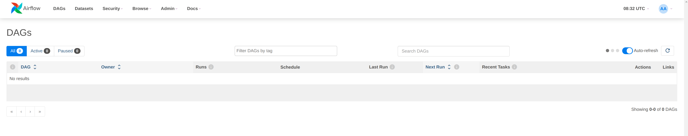
Your first Apache Airflow and Apache Hop DAG
We’ll use the Apache Airflow DockerOperator to run Apache Hop workflows and pipelines from an embedded container in Apache Airflow.
Again, you don’t need to be an Apache Airflow, Docker, or Python expert to create DAGs, we’ll treat DAGs as just another text file. Since we’ll use a container to run our workflows and pipelines, the configuration in our DAG will look very similar to the environment variables you’ll pass to the short-lived Apache Hop container.
Let’s take a closer look at a couple of things in the DAG we’ll use. This will look very familiar if you’ve even run Apache Hop workflows and pipelines in containers:
Import the DockerOperator into your DAG:
from airflow.operators.docker_operator import DockerOperatorLet’s take a look at the end of the Apache Hop task first:
mounts=[Mount(source='LOCAL_PATH_TO_PROJECT_FOLDER', target='/project', type='bind'),
Mount(source='LOCAL_PATH_TO_ENV_FOLDER', target='/project-config', type='bind')],The mounts section is where we’ll link your project and environment folders to the container. LOCAL_PATH_TO_PROJECT_FOLDER is the path to the project folder on your local file system (the folder where you keep your hop-config.json file, metadata folder and workflows and pipelines). This folder will be mounted as /project inside the container. LOCAL_PATH_TO_ENV_FOLDER is similar but points to the folder where your environment configuration (json) files are. This folder will be mounted as /project-config inside the container.
Define and configure the pipeline in your DAG task:
hop = DockerOperator(
task_id='sample-pipeline',
# use the Apache Hop Docker image. Add your tags here in the default apache/hop: syntax
image='apache/hop',
api_version='auto',
auto_remove=True,
environment= {
'HOP_RUN_PARAMETERS': 'INPUT_DIR=',
'HOP_LOG_LEVEL': 'Basic',
'HOP_FILE_PATH': '${PROJECT_HOME}/transforms/null-if-basic.hpl',
'HOP_PROJECT_DIRECTORY': '/project',
'HOP_PROJECT_NAME': 'hop-airflow-sample',
'HOP_ENVIRONMENT_NAME': 'env-hop-airflow-sample.json',
'HOP_ENVIRONMENT_CONFIG_FILE_NAME_PATHS': '/project-config/env-hop-airflow-sample.json',
'HOP_RUN_CONFIG': 'local'
},The parameters to specify here are:
-
task_id: a unique id for this Airflow task in the DAG
-
image: we use "apache/hop" in this example, which will always grab the latest release. Add a tag to use a specific Apache Hop release, e.g. "apache/hop:2.4.0" or "apache/hop:Development" for the very latest development version
-
environment is where we’ll tell the DockerOperator which pipeline to run and provide additional configuration. The environment variables used here are exactly what you would pass to a standalone short-lived container without Airflow:
-
HOP_RUN_PARAMETERS: parameters to pass to the workflow or pipeline
-
HOP_LOG_LEVEL: the logging level to use with your workflow or pipeline
-
HOP_FILE_PATH: the path to the workflow or pipeline you want to use. This is the path in the container and is relative to the project folder
-
HOP_PROJECT_DIRECTORY: the folder where your project files live. In this example, this is the /project folder we mounted in the previous section.
-
HOP_PROJECT_NAME: your Apache Hop project’s name. This will only be used internally (and will show in the logs). Your project name is not necessarily the same name you used to develop the project in Hop Gui, but keeping things consistent never hurts.
-
HOP_ENVIRONMENT_NAME: similar to the project name, this is the name for the environment that will be created through hop-conf when the container starts.
-
HOP_ENVIRONMENT_CONFIG_FILE_NAME_PATHS: the paths to your environment configuration files. These file paths should be relative to the /project-config folder we mounted in the previous section.
-
HOP_RUN_CONFIG: the workflow or pipeline run configuration to use. Your mileage may vary, but in the vast majority of cases, using a local run configuration will be what you need.
-
That’s everything we need to specify for a first run. This DAG will look like the one below:
from datetime import datetime, timedelta
from airflow import DAG
from airflow.operators.bash_operator import BashOperator
from airflow.operators.docker_operator import DockerOperator
from airflow.operators.python_operator import BranchPythonOperator
from airflow.operators.dummy_operator import DummyOperator
from docker.types import Mount
default_args = {
'owner' : 'airflow',
'description' : 'sample-pipeline',
'depend_on_past' : False,
'start_date' : datetime(2022, 1, 1),
'email_on_failure' : False,
'email_on_retry' : False,
'retries' : 1,
'retry_delay' : timedelta(minutes=5)
}
with DAG('sample-pipeline', default_args=default_args, schedule_interval=None, catchup=False, is_paused_upon_creation=False) as dag:
start_dag = DummyOperator(
task_id='start_dag'
)
end_dag = DummyOperator(
task_id='end_dag'
)
hop = DockerOperator(
task_id='sample-pipeline',
# use the Apache Hop Docker image. Add your tags here in the default apache/hop: syntax
image='apache/hop',
api_version='auto',
auto_remove=True,
environment= {
'HOP_RUN_PARAMETERS': 'INPUT_DIR=',
'HOP_LOG_LEVEL': 'Basic',
'HOP_FILE_PATH': '${PROJECT_HOME}/transforms/null-if-basic.hpl',
'HOP_PROJECT_DIRECTORY': '/project',
'HOP_PROJECT_NAME': 'hop-airflow-sample',
'HOP_ENVIRONMENT_NAME': 'env-hop-airflow-sample.json',
'HOP_ENVIRONMENT_CONFIG_FILE_NAME_PATHS': '/project-config/env-hop-airflow-sample.json',
'HOP_RUN_CONFIG': 'local'
},
docker_url="unix://var/run/docker.sock",
network_mode="bridge",
mounts=[Mount(source='LOCAL_PATH_TO_PROJECT_FOLDER', target='/project', type='bind'), Mount(source='LOCAL_PATH_TO_ENV_FOLDER', target='/project-config', type='bind')],
force_pull=False
)
start_dag >> hop >> end_dagDeploy and run your first DAG
All it takes to deploy your dag is to put it in Airflow’s dags folder. Our docker-compose setup has created a dags folder in the directory where you started the compose file. Airflow will scan this folder every two minutes by default.
Save the DAG we just created in your dags folder as apache-hop-dag-simple.py. After a short wait, your DAG will show up in the list of dags.
If there are any syntax errors in your DAG, Airflow will let you know. Expand the error dialog for more details about the error, as shown in the image below. Don’t worry, you shouldn’t have any errors with the DAG we just created.
If you’re using DockerOperator and need to access a database or service running on your host machine, be sure to set the host as host.docker.internal in the Hop connection configuration to allow the container to access the host services. |
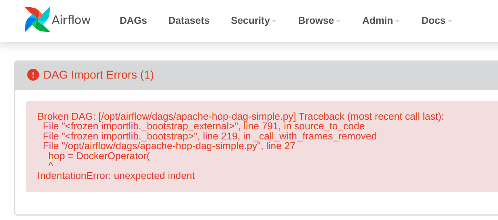
If your DAG is deployed correctly (it should), you’ll see it show up in the list of available DAGs.
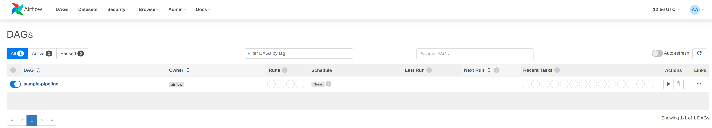
Click on the sample-pipeline DAG to see more details about it. From the tab list at the top of the page, select "Code" to review the DAG you just deployed, or "Graph" to see the graph representation of the DAG. This graph is extremely simple, but we’re exploring Apache Airflow, so that’s intentional.
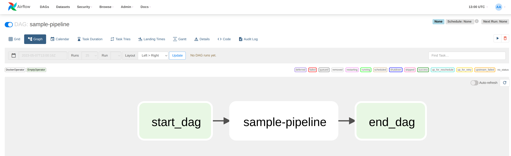
To run this DAG, click the play icon with the Trigger DAG option. The icon is available from multiple locations in the Apache Airflow user interface. It is almost always available in the upper right corner.
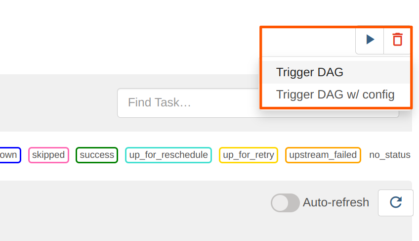
Your DAG will run in the background. To follow up and check the logs, click on your DAG name to go to its details page.
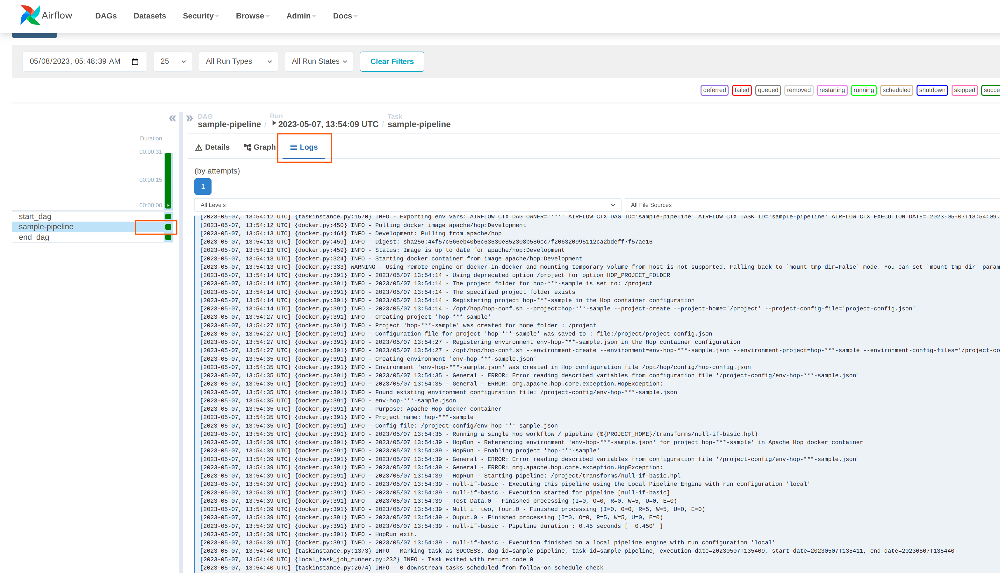
2024-05-07, 13:54:39 UTC] {docker.py:391} INFO - 2023/05/07 13:54:39 - Ouput.0 - Finished processing (I=0, O=0, R=5, W=5, U=0, E=0)
[2024-05-07, 13:54:39 UTC] {docker.py:391} INFO - 2023/05/07 13:54:39 - null-if-basic - Pipeline duration : 0.45 seconds [ 0.450 ]
[2024-05-07, 13:54:39 UTC] {docker.py:391} INFO - HopRun exit.
[2024-05-07, 13:54:39 UTC] {docker.py:391} INFO - 2023/05/07 13:54:39 - null-if-basic - Execution finished on a local pipeline engine with run configuration 'local'
[2024-05-07, 13:54:40 UTC] {taskinstance.py:1373} INFO - Marking task as SUCCESS. dag_id=sample-pipeline, task_id=sample-pipeline, execution_date=20230507T135409, start_date=20230507T135411, end_date=20230507T135440
[2024-05-07, 13:54:40 UTC] {local_task_job_runner.py:232} INFO - Task exited with return code 0When you return to the Airflow home screen, your DAG will now show green circles for successful runs.
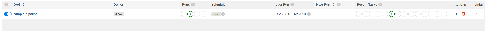
Using variables and parameters in a DAG
Your real-life pipelines will be more complex than the extremely simple example pipeline we just ran.
In the basic example we just ran, we passed an environment file but didn’t use it. In a lot of cases, you’ll want to not only use variables from your environment files, you may also want to pass parameters to your pipelines and workflows. Let’s have a closer look at that.
Create the environment configuration below to a config folder next to your project folder. We’ll use the pipeline pipelines/pipeline-with-parameter.hpl from the samples project to print a pipeline parameter and a variable from the environment configuration file to the logs. Again, these examples are extremely simple, your real-life projects will be more complex, but the process remains the same.
{
"variables" : [ {
"name" : "ENV_VARIABLE",
"value" : "variable value",
"description" : ""
} ]
}This pipeline is again very basic. All we’ll do is accept a parameter and print it in the logs:
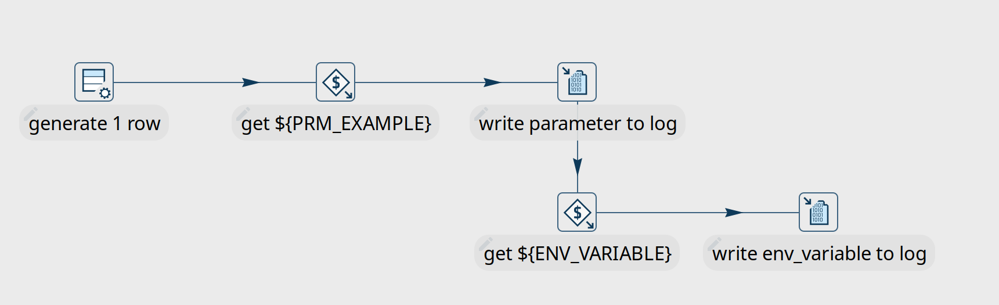
We’ll create a new DAG for this example. Most of it will be the same or similar to the previous example, with some minor changes:
First of all, we’ll need to add one additional import at the start of the DAG:
from airflow import DAG
from airflow.models import Variable
from airflow.operators.bash_operator import BashOperatorNext, we’ll need to add the parameter in this pipeline and tell Airflow to pick up the values from the run configuration we’ll pass to the DAG later on.
We’ll also use logging level Detailed to make sure we can see the parameters we’ll pass to the pipeline.
environment= {
'HOP_RUN_PARAMETERS': 'PRM_EXAMPLE=',
'HOP_LOG_LEVEL': 'Detailed',
'HOP_FILE_PATH': '${PROJECT_HOME}/hop/pipeline-with-parameter.hpl',
'HOP_PROJECT_DIRECTORY': '/project',
'HOP_PROJECT_NAME': 'hop-airflow-sample',
'HOP_ENVIRONMENT_NAME': 'env-hop-airflow-sample.json',
'HOP_ENVIRONMENT_CONFIG_FILE_NAME_PATHS': '/project-config/hop-airflow-config.json',
'HOP_RUN_CONFIG': 'local'
},Also, we really need the environment configuration file this time, so make sure your mounts are correct.
mounts=[Mount(source='<YOUR_PROJECT_PATH>/', target='/project', type='bind'),
Mount(source='<YOUR_CONFIG_PATH>/config/', target='/project-config', type='bind')],Add this new DAG to your dags folder and wait for it to appear in your Apache Airflow console.
To run this DAG with parameters, we’ll use the Trigger DAG w/ config option. We’ll specify the prm_example value that Airflow will pass to the PRM_EXAMPLE parameter in the pipeline. The syntax to use is shown below. Click "Trigger" when you’re done.
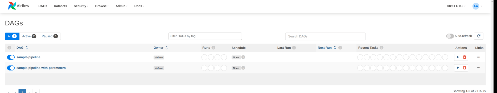
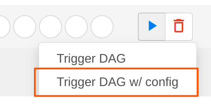 | 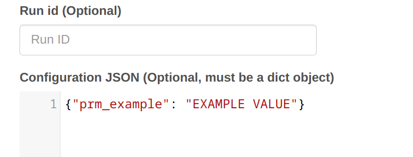 | 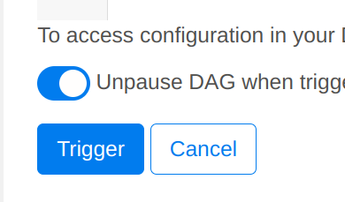 |
Your DAG logs will now show the environment variable and the parameter we used in this example:
[2024-05-08, 08:21:34 UTC] {docker.py:391} INFO - 2023/05/08 08:21:34 - pipeline-with-parameter - Pipeline has allocated 5 threads and 4 rowsets.
[2024-05-08, 08:21:34 UTC] {docker.py:391} INFO - 2023/05/08 08:21:34 - generate 1 row.0 - Starting to run...
[2024-05-08, 08:21:34 UTC] {docker.py:391} INFO - 2023/05/08 08:21:34 - generate 1 row.0 - Finished processing (I=0, O=0, R=0, W=1, U=0, E=0)
[2024-05-08, 08:21:34 UTC] {docker.py:391} INFO - 2023/05/08 08:21:34 - get ${PRM_EXAMPLE}.0 - field [example] has value [EXAMPLE VALUE]
[2024-05-08, 08:21:34 UTC] {docker.py:391} INFO - 2023/05/08 08:21:34 - get ${PRM_EXAMPLE}.0 - Finished processing (I=0, O=0, R=1, W=1, U=0, E=0)
[2024-05-08, 08:21:34 UTC] {docker.py:391} INFO - 2023/05/08 08:21:34 - write parameter to log.0 -
[2024-05-08, 08:21:34 UTC] {docker.py:391} INFO - 2023/05/08 08:21:34 - get ${ENV_VARIABLE}.0 - field [env_variable] has value [variable value]
[2024-05-08, 08:21:34 UTC] {docker.py:391} INFO - 2023/05/08 08:21:34 - write env_variable to log.0 -
[2024-05-08, 08:21:34 UTC] {docker.py:391} INFO - 2023/05/08 08:21:34 - write parameter to log.0 - Finished processing (I=0, O=0, R=1, W=1, U=0, E=0)
[2024-05-08, 08:21:34 UTC] {docker.py:391} INFO - 2023/05/08 08:21:34 - get ${ENV_VARIABLE}.0 - Finished processing (I=0, O=0, R=1, W=1, U=0, E=0)
[2024-05-08, 08:21:34 UTC] {docker.py:391} INFO - 2023/05/08 08:21:34 - write env_variable to log.0 - Finished processing (I=0, O=0, R=1, W=1, U=0, E=0)Scheduling a DAG in Apache Airflow
So far, we’ve looked at DAG that we ran manually and ad-hoc. There are lots of well-documented options to schedule DAGs in Apache Airflow. Since scheduling your DAGs is not really Apache Hop related, we’ll only cover this briefly here.
One option is to provide a cron string to schedule your DAG execution. For example, to run a specific DAG at 10:00 am every morning, we’ll change the schedule_interval from None to a cron expression in the "with DAG" line in our DAG (line breaks added for readability):
with DAG(
'sample-pipeline',
default_args=default_args,
schedule_interval='0 10 * * *',
catchup=False,
is_paused_upon_creation=False
) as dag:For a more detailed description of the scheduling options in Apache Airflow, you may find this Medium post helpful.
Summary
We’ve covered the basics of running Apache Hop pipelines (or workflows) in Apache Airflow with the DockerOperator.
There are other options: you could use Airflow’s BashOperator to use hop-run directly or the HTTP operator to run pipelines or workflows on a remote hop server.